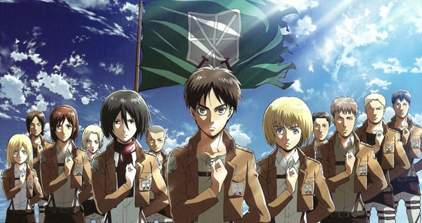

Атака на титанов

Атака на титанов это довольно новое аниме которое вышло в 2013 году.
- год выхода:2013
- Автор: Тэцуро Араки
- издатель манги:Коданся
- Серий:94
Википедия: Вики
Атака на титанов это довольно новое аниме которое вышло в 2013 году.
Википедия: Вики